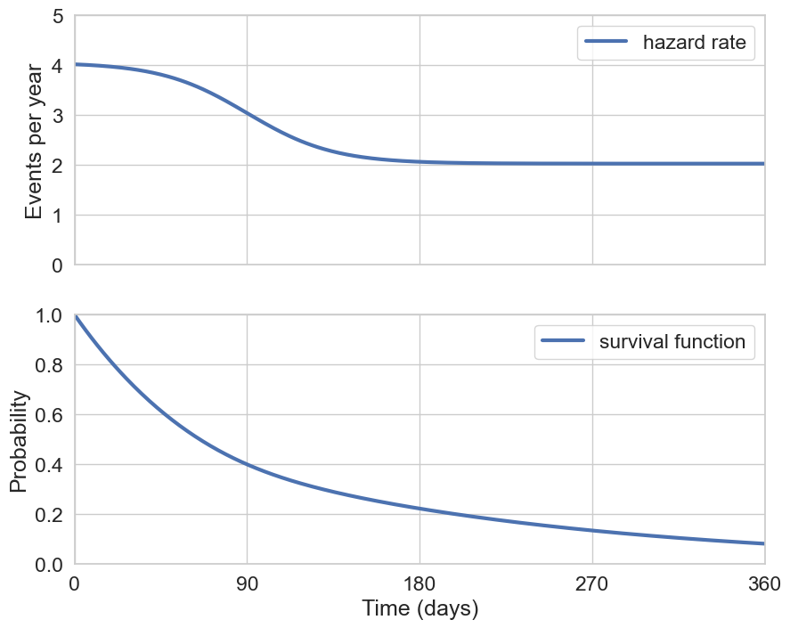

The Kaplan-Meier method is one way to estimate the survival curve \(S(t)\) of a population based on observed event and censoring times. The method is extremely simple – below we will implement the method using numpy in two lines of code. The basic idea is that the survival curve itself is at each time point \(t\) a free parameter to be estimated subject to the condition that \[S(t+\Delta t) = S(t)P(\text{survive to }t + \Delta t|\text{survive to }t)\]
One question that inevitably comes up when computing Kaplan-Meier curves is whether two curves are significantly different. The log-rank test is one commonly-applied techniques to address this question. The log-rank test is also quite easy to understand and here will we see a visually demonstration of the statistical test.
Problem Setup
In order to demonstrate the estimation of survival curves by the KM approach, let’s start by simulating patient data with a known survival curve. Since KM is a non-parametric method, let’s at least use a survival curve that’s complex enough to not be simply modelled by an exponential. An interesting example is a survival curve in which the initial hazard rate is quite large, but over time the hazard decreases. This example could be very interesting for a medication in which most patients experience severe side effects early on, but over time the risk for severe events decreases.
Code
def sigmoid(x):return1./(1+ np.exp(-x))def generate_two_phase_hazard( rate_1: float, rate_2: float, transition_time: int, transition_dur: int, observation_time: int):# divide by 2 between the window is symmetric about the transition time transition_dur = transition_dur /2 time = np.linspace(0, observation_time, observation_time +1) hazard =\ rate_1 * sigmoid(-(time - transition_time) / transition_dur) +\ rate_2 * sigmoid( (time - transition_time) / transition_dur) return hazarddef compute_survival_from_hazard_rate(hazard_rate): hazard_rate = np.hstack((np.array(0), hazard_rate[:-1]))return np.exp(-hazard_rate.cumsum())rate_1 =1./60# 1 event per 60 daysrate_2 =1./180# 1 event per yearobservation_time =365*5transition_time =90transition_dur =45hazard_rate = generate_two_phase_hazard(rate_1, rate_2, transition_time, transition_dur, observation_time)survival_function = compute_survival_from_hazard_rate(hazard_rate)assert np.isclose(survival_function[0], 1)survival_function = survival_function / survival_function[0]

Figure 1: Test
Let’s now simulate 100 patients subject to the above survival curve and see that we can use the Kaplan-Meier approach to estimate the true curve.
Code
def sample_survival_times( n_patients: int, survival_function: np.array) -> np.array:# sample survival times survival_samples = np.random.rand(n_patients) observation_time =len(survival_function) survival_times = observation_time - np.searchsorted(survival_function[::-1], survival_samples) return survival_timesdef generate_survival_data( n_patients: int, survival_function: np.array, censor_rate: float) -> pd.DataFrame:# require a non-increasing survival function that begins at 1assert survival_function[0] ==1assert np.all(survival_function[:-1] >= survival_function[1:])# sample survival times survival_times = sample_survival_times(n_patients, survival_function)# apply censoring --# censoring is basically a competing survival process, in this case# with an assumed constant rate time = np.linspace(0, len(survival_function), len(survival_function) +1) censoring_survival = np.exp(- censor_rate * time) censoring_times = sample_survival_times(n_patients, censoring_survival) patients =list(range(n_patients)) time_to_event = np.minimum(survival_times, censoring_times) censoring_flag = np.argmin(np.vstack((survival_times, censoring_times)), axis=0)return pd.DataFrame.from_dict({'patient':patients,'event_time':time_to_event,'is_censored':censoring_flag }) n_patients =100censor_rate =1./180cohort_1_events = generate_survival_data(n_patients, survival_function, censor_rate)cohort_1_events
patient
event_time
is_censored
0
0
62
0
1
1
18
0
2
2
34
0
3
3
10
0
4
4
34
0
...
...
...
...
95
95
93
0
96
96
55
1
97
97
112
1
98
98
60
1
99
99
21
0
100 rows × 3 columns
Kaplan-Meier Curve
In order to calculate the KM curve, we first need to aggregate the patient data by event time as follows: